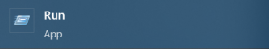
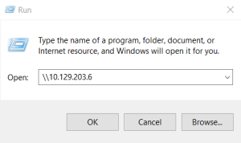
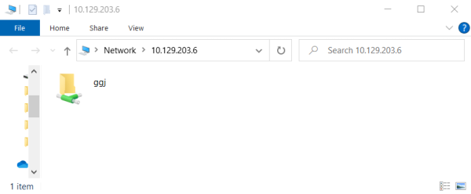

Windows GUI
Windows GUI1. press [WINKEY] + [R] to open the Run dialog box and type the file share location
 2. If the shared folder allows anonymous authentication, or we are authenticated with a user who has privilege over that shared folder.
In that case, we will not receive any form of authentication request, and it will display the content of the shared folder.
